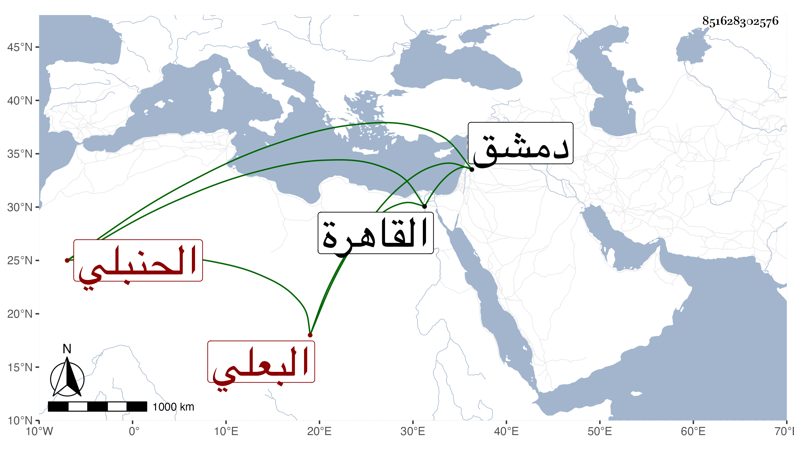

0902Sakhawi.DawLamic.ITO20230111-ara1.EIS1600.851628302576
Biography ID: 851628302576
664
علي بن أمين الدين بن محمد بن علي بن عباس بن فتيان البعلي الحنبلي الشهير بابن اللحام . ولد في صفر سنة اثنتين وخمسين وسبعمائة واشتغل ببلده على الشمس بن اليونانية وسمع بها جماعة وكذا اشتغل بدمشق في الفقه وأصوله ومات بالقاهرة في يوم الجمعة عيد الأضحى سنة ثلاث .
